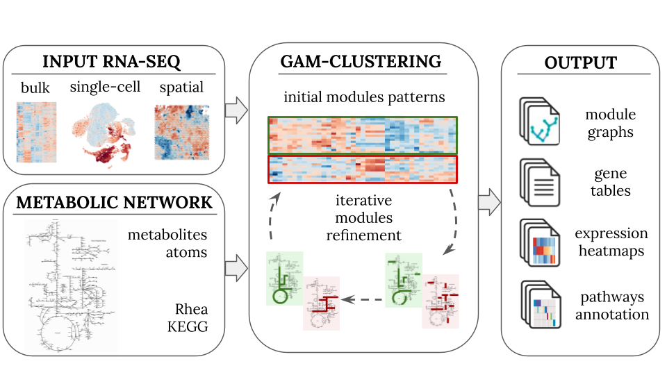

GAMclust is an R package for identifying transcriptionally regulated metabolic modules in complex gene expression profiling datasets.
GAMclust implements a flexible data processing pipeline designed to analyze three major types of gene expression data: bulk, single-cell, and spatial. The pipeline takes as an input a gene expression matrix and a global metabolic network. After initial preprocessing, both of these inputs are integrated by the GAM-clustering algorithm, which identifies metabolic subnetworks (modules) with correlated gene expression behaviors. To aid in the interpretation of the results, several post-processing procedures are carried out, including visualization and annotation of the modules.
Interactive results of GAM-clustering analysis of ImmGen Open Source and Tabula Muris data can be explored here, details are in Gainullina et al, 2023.
Installation
GAMclust package can be installed from GitHub:
remotes::install_github("alserglab/GAMclust")Algorithm overview

GAMclust identifies coordinated metabolic modules by integrating gene co-expression with the topology of the KEGG metabolic network. The algorithm first initializes representative expression patterns using k-means ( by default). Then scores for each gene against every pattern are calculated using the following formulas:
where:
- — expression of the -th gene, ;
- — pattern of the -th cluster if or special fake pattern if ;
- — distance to the pattern the score is being calculated for;
- — distance to the pattern which this gene has the most correlation with (all other patterns are considered except the pattern the score is being calculated for);
- — distance to the fake pattern.
These scores are assigned as edge weights in the metabolic network, and for each expression pattern a maximum-weight connected subgraph (MWCS) is extracted, yielding candidate metabolic modules. The patterns are then updated from the identified modules and the procedure is repeated until convergence.
See the Algorithm overview for a detailed description.